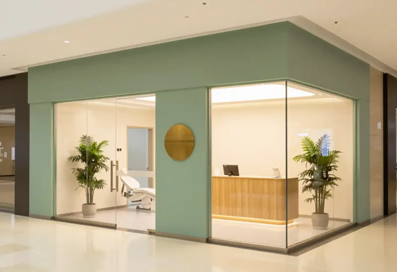

Shopping Jardins do Vale · Petrolina, PE
Uma clínica
especializada
em você.
Implante, lente de contato dental, aparelho, canal e o dentista do seu filho. Cada tratamento com quem é especialista nele, num lugar só.
- 10 tratamentos
- Atende crianças
- Dentro do shopping
A primeira consulta é uma conversa: você conta o que incomoda, a gente mostra o caminho.
- Implantes
- Lentes de contato dental
- Facetas de porcelana
- Ortodontia
- Harmonização orofacial
- Tratamento de canal
- Odontopediatria
- Cirurgia oral
- Próteses
- Clareamento
- Clínica geral
Tratamentos
O que você quer resolver?
Toque no tratamento e a mensagem para agendar já vai pronta no WhatsApp.
Por onde começar
Não sabe qual especialista procurar?
Responda três perguntas. No fim, você vê com quem falar e a mensagem já sai escrita.
Equipe
Quem vai cuidar de você
A clínica
Feita para você se sentir bem antes de sentar na cadeira
No shopping
Dá para resolver o dente e o resto do dia no mesmo lugar, com estacionamento coberto.
Sem pressa na espera
Sala confortável, café enquanto você aguarda.
Criança bem recebida
Odontopediatria com especialista, para a primeira visita ao dentista ser tranquila.
Tecnologia
Escaneamento digital do sorriso, sem aquela massa de moldagem.
Quem já veio
O que os pacientes dizem
212 avaliações
★★★★★Fiz as lentes com a Dra. Helena. Ela me mostrou no escaneamento como ia ficar antes de começar, e ficou exatamente assim.
★★★★★Meu filho tinha pavor de dentista. Com a Dra. Marina, na segunda consulta ele já entrou sozinho.
★★★★★Cheguei com dor num sábado de manhã e fui atendido no mesmo dia. Resolvi o canal em duas sessões.
Quanto custa a avaliação?
A primeira avaliação é gratuita e leva cerca de 40 minutos. Você sai dela com o plano de tratamento e o valor fechado.
Vocês atendem convênio?
O atendimento é particular. A gente emite a nota e o relatório para você pedir reembolso ao seu plano.
Dá para parcelar o tratamento?
Sim: Pix, débito ou cartão em até 12 vezes. O plano de tratamento já mostra as opções antes de você decidir.
Atendem criança?
Sim. A Dra. Marina Teles é especialista em odontopediatria e atende desde a primeira visita ao dentista.
Atendem urgência, dor de dente?
Sim. Todo dia há horários guardados para encaixe. Se for dor, diga isso na mensagem do WhatsApp.
Qual o horário de funcionamento?
De segunda a sexta, das 9h às 20h. Aos sábados, das 9h às 14h.
Lente de contato dental desgasta o dente?
Depende de cada caso. Se precisa desgastar, e quanto, quem diz é a avaliação com a Dra. Helena Duarte, que faz lentes e facetas de porcelana.
Como chegar
Dentro do Shopping Jardins do Vale
- Endereço
- Shopping Jardins do Vale, piso L2, loja 214
Petrolina, PE - (87) 90000-0000
- Horário
- Seg. a sex., 9h às 20h · sáb., 9h às 14h
- @arco.odonto
